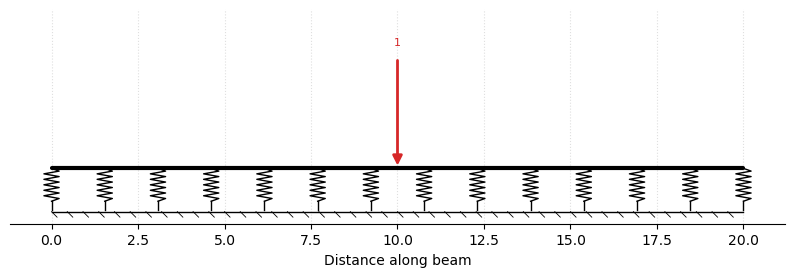
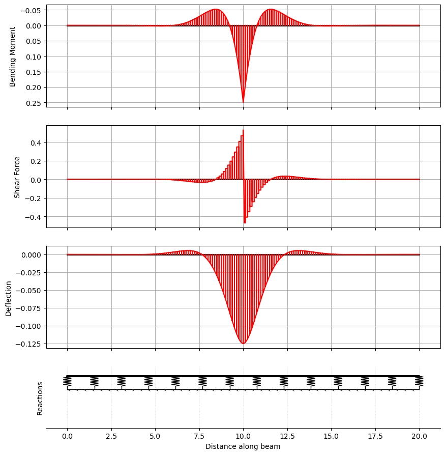
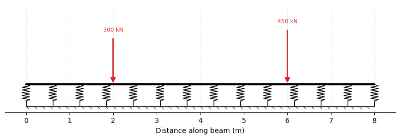
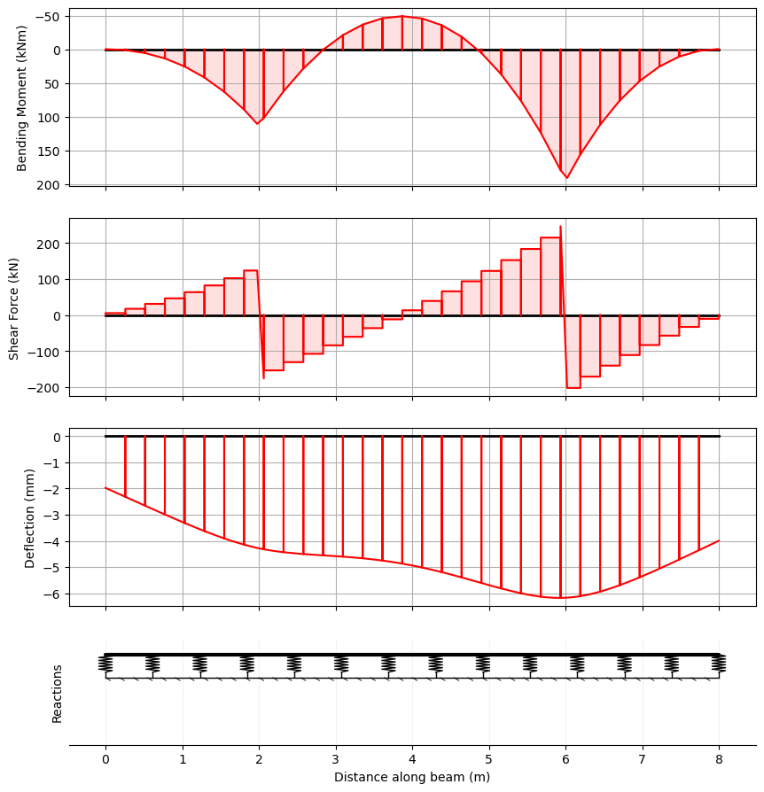
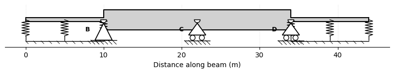
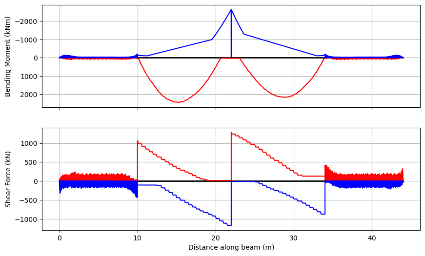
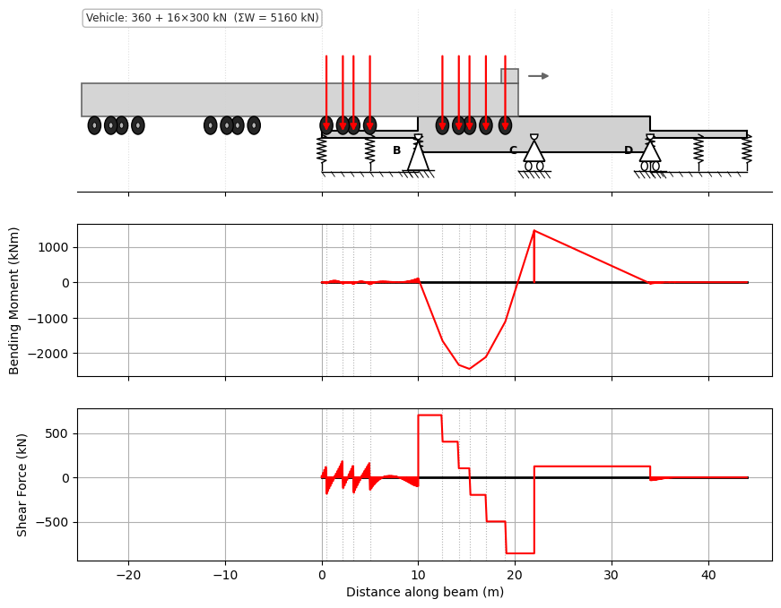

Beam on an Elastic (Winkler) Foundation#
A member can rest on a Winkler foundation — a continuous bed of springs of stiffness \(k_f\) (the modulus of subgrade reaction, per unit length of beam) that pushes back in proportion to the local deflection, \(q(x) = -k_f\,v(x)\). This models strip and raft footings, railway track, and pipelines.
“Member” and “span” mean the same thing. PyCBA builds a beam from members, added with
add_member(or equivalentlyadd_span— the two are aliases for the element between two nodes). A member carrying a foundation is automatically meshed into many short Euler–Bernoulli sub-elements and condensed back to its two end nodes — a “super-element”, the same internal-meshing pattern the nonlinear analysis uses. The meshing is invisible: the member still has just two nodes, so reactions, plotting and influence lines are unchanged.
Pass kf= to BeamAnalysis (a scalar for every member, or one value per member). The mesh density defaults to the foundation characteristic length
This first version supports prismatic, fixed-fixed members (no GAv) carrying UDL, point and partial-UDL loads.
[1]:
import numpy as np
import matplotlib.pyplot as plt
import pycba as cba
Example 1 - Validation against Hetényi#
For a long member (\(L \gg \lambda\)) under a central point load \(P\), Hetényi’s infinite-beam solution gives the deflection and moment under the load as
We model a free–free member (the foundation alone supports it). Rendering the model with plot_beam() shows the member resting on its foundation — the row of springs on hatched ground — with the applied load.
[2]:
L, EI, kf, P = 20.0, 1.0, 4.0, 1.0 # lambda = 1 -> L/lambda = 20 (long)
beta = (kf / (4 * EI)) ** 0.25
ba = cba.BeamAnalysis([L], EI, [0, 0, 0, 0], kf=kf) # free-free member on a foundation
ba.add_pl(i_member=1, p=P, a=L / 2)
ba.plot_beam(units="none"); # render the model

[3]:
ba.analyze()
res = ba.beam_results.results
i = np.argmin(np.abs(res.x - L / 2))
print(f"under the load: v0 = {res.D[i]:+.4f} (Hetenyi {-P*beta/(2*kf):+.4f})")
print(f" M0 = {np.max(np.abs(res.M)):.4f} (Hetenyi {P/(4*beta):.4f})")
ba.plot_results(show_beam=False, units="none");
under the load: v0 = -0.1250 (Hetenyi -0.1250)
M0 = 0.2494 (Hetenyi 0.2500)

Example 2 - A strip footing#
A reinforced-concrete strip footing carries two column loads on soil with a modulus of subgrade reaction \(k_f\). The footing member is free at both ends — the soil carries the loads. We first render the model (the footing on its elastic foundation with the two column loads), then read the bending moment and the settlement (and hence the bearing pressure \(k_f\,|v|\)) from the analysis.
[4]:
L = 8.0 # m, footing length
EI = 1.0e5 # kNm^2 (footing flexural rigidity)
kf = 2.0e4 # kN/m per m (subgrade modulus x footing width)
footing = cba.BeamAnalysis([L], EI, [0, 0, 0, 0], kf=kf)
footing.add_pl(i_member=1, p=300, a=2.0) # column 1
footing.add_pl(i_member=1, p=450, a=6.0) # column 2
footing.plot_beam(); # render the model

[5]:
footing.analyze()
res = footing.beam_results.results
pressure = kf * (-res.D) # bearing pressure
print(f"max hogging/sagging moment: {res.M.min():.1f} / {res.M.max():.1f} kNm")
print(f"max bearing pressure: {pressure.max():.1f} kN/m")
footing.plot_results(show_beam=False);
max hogging/sagging moment: -49.2 / 191.1 kNm
max bearing pressure: 123.6 kN/m

Example 3 - A railway bridge with ballasted approaches#
This combines a foundation with ordinary supports and a moving load. A train runs along ballasted track — the rail on its ballast/subgrade, the classic Hetényi (1946) beam-on-elastic-foundation — onto a two-span bridge where the track is directly fixed to the deck (no ballast, so the deck spans between the abutments and a central pier), and off again onto ballast:
0 ─ approach (foundation) ─ 10 ═ span 1 ═ 22 (pier) ═ span 2 ═ 34 ─ departure (foundation) ─ 44
(free) (abutment) (pier) (abutment) (free)
We model it as one continuous member: a foundation (kf) on the approaches only, pinned abutments and a central pier under the bridge, and the stiffer bridge-deck EI over the two spans. Then we run the AS5100.2 300LA rail load model (VehicleLibrary.AU.get_la_rail) across it and envelope the effects.
[6]:
# approach | abutment | span 1 | pier | span 2 | abutment | departure
L = [10.0, 12.0, 12.0, 10.0] # m
EI = [1.3e4, 2.0e6, 2.0e6, 1.3e4] # track on ballast, two bridge spans, track on ballast
kf = [4.0e4, None, None, 4.0e4] # ballast (Winkler) under the approaches only
R = [0, 0, -1, 0, -1, 0, -1, 0, 0, 0] # free | abutment | pier | abutment | free
ba = cba.BeamAnalysis(L, EI, R, kf=kf)
ba.plot_beam(); # ballasted approaches + the two-span bridge deck

[7]:
veh = cba.VehicleLibrary.AU.get_la_rail(axle_group_count=4) # AS5100.2 300LA
bridge = cba.BridgeAnalysis(ba, veh)
env = bridge.run_vehicle(step=0.5)
cv = bridge.critical_values(env)
print(f"span sagging Mmax: {cv['Mmax']['val']:.0f} kNm at x = {cv['Mmax']['at']:.1f} m")
print(f"pier hogging Mmin: {cv['Mmin']['val']:.0f} kNm at x = {cv['Mmin']['at']:.1f} m")
print(f"reactions: abutment {cv['Rmax0']['val']:.0f}, pier {cv['Rmax1']['val']:.0f}, "
f"abutment {cv['Rmax2']['val']:.0f} kN")
env.plot();
span sagging Mmax: 2445 kNm at x = 15.3 m
pier hogging Mmin: -2639 kNm at x = 22.0 m
reactions: abutment 1162, pier 1715, abutment 1023 kN

Each span carries a sagging envelope, with hogging over the central pier — the response of a two-span continuous bridge — while the ballasted approaches show the small, oscillating signature of a beam on an elastic foundation, each axle riding in its own deflection bowl. The foundation, the abutments and the pier all act together in the one model. We can also see the train at its worst position for span sagging:
[8]:
bridge.plot_static(cv["Mmax"]["pos"][0]); # the 300LA at the critical position

A linear, no-tension idealisation. A real ballast/subgrade carries no tension, and run-on slabs in fact span a settlement trough behind the abutment rather than resting on a continuous bed (O’Brien, Keogh & O’Connor (2014), Bridge Deck Analysis §4.5). The linear, bidirectional Winkler foundation used here therefore over-estimates effects in any uplift zones; a no-tension foundation would relieve them.
Notes#
kfmay be set per member, so a beam can rest on a foundation over part of its length and be conventionally supported elsewhere (the schematic draws the springs only under the foundation members).The mesh density defaults to the characteristic length; see
pycba.foundation.auto_subdivisions.Current support: prismatic, fixed-fixed members without shear flexibility (
GAv), carrying UDL, point and partial-UDL loads. Other combinations raise a clearNotImplementedError.